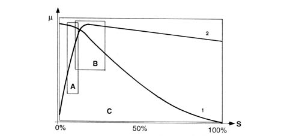

Specifications
- Path
- Descriptions > 33 BRAKES > 3350 TRACTION CONTROL > 3350E VEHICLE STABILITY CONTROL SYSTEM > Specifications
- Kind
- system description
- Applies to
- all engines; all production periods
- Interactive page
- https://sloeber94.github.io/elrnDB-lThss/en/#/152574
Applies to: all engines; all production periods
Driving a vehicle in all conditions where the physical limits of grip and, consequently, stability may be reached can be a difficult task for the average driver therefore in order to further improve safe driving conditions an electronic system capable of assisting the driver with this difficult task is available.
The systems currently employed to ensure safer driving in particular conditions are mainly the A.B.S. which controls braking and the T.C. and A.S.R./M.S.R. systems which control traction during acceleration through action on the brakes (T.C.) and traction/drive torque during acceleration and release through action on the brakes and on the engine control system motorized throttle (A.S.R./M.S.R.).
The ESP system (Electronic Stability Program) includes all the above listed functions ensuring optimum dynamic control of the vehicle with the addition of specific sensors:
- steering angle sensor on the steering wheel
- slewing/lateral acceleration sensor at the centre of gravity under the centre tunnel.

- m - Wheel grip
- S - Slipping
- A - EBD intervention area
- A - ABS intervention area
- C - ESP intervention area
- 1 - Lateral force curve
- 2 - Longitudinal force curve
As can be seen from the grip/slipping diagram, the area covered by the ESP system is larger than that covered by a conventional ABS/EBD system.
The ESP system cannot be switched off as it is a safety system; the A.S.R./M.S.R. function, on the other hand, can be switched off via the button in the centre console.
The intervention of the ESP system is signalled by a special warning light in the instrument panel node (N.Q.S.)